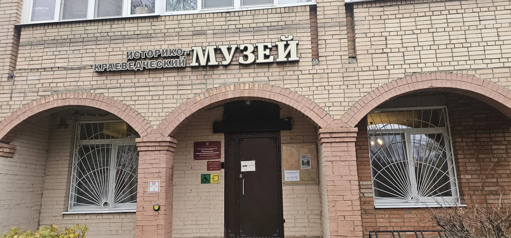
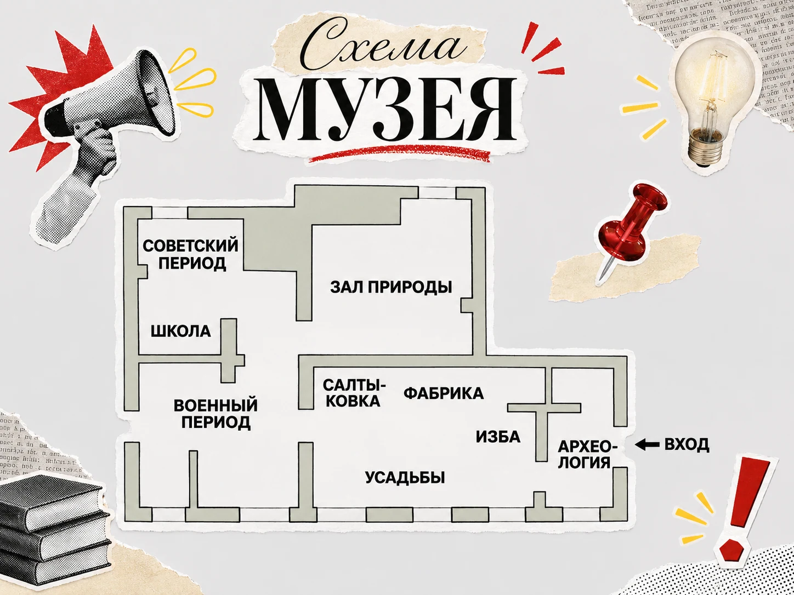

ПОЛЕВОЕ ИССЛЕДОВАНИЕ ● МЕТОДОЛОГИЯ ИССЛЕДОВАНИЙ
Включённое наблюдение за образовательной экскурсией школьников в Балашихинском историко-художественном музее

Музей принято воспринимать как место, где можно познакомиться с историей, рассмотреть экспонаты и услышать рассказ экскурсовода. Но сегодня мне удалось посмотреть на него с исследовательской позиции, задавая себе вопросы: как устроено взаимодействие людей внутри музейного пространства? кто определяет, на что обращать внимание? и почему в одних ситуациях школьники преимущественно слушают, а в других начинают самостоятельно задавать вопросы?
Чтобы изучить эти взаимодействия, я посетила Балашихинский историко-художественный музей и присоединилась к экскурсии для учащихся пятого класса.
Меня интересовало не качество преподавания и не содержание исторического рассказа само по себе, а то, как школьники взаимодействуют с экскурсоводом, друг с другом и предметной средой музея.
Паспорт полевого наблюдения
| Параметр | Описание |
|---|---|
| Исследователь | Алёна Савранская |
| Дисциплина | Методология исследований в образовании, модуль 2 |
| Тема | Образовательные взаимодействия школьников в пространстве краеведческого музея |
| Место | Балашихинский историко-художественный музей |
| Дата | 10 ноября 2026 года |
| Время | 11:00–12:30 |
| Продолжительность экскурсии | Около 45 минут |
| Дополнительная работа в поле | 30 минут фото- и видеосъёмки, 15 минут разговора с младшим научным сотрудником Елизаветой (и она очень милая!) |
| Участники | Около 20 учащихся 5 класса, один сопровождающий учитель, экскурсовод и ещё одна сотрудница музея |
| Позиция исследователя | Обычный посетитель, присоединившийся к экскурсии |
Исследовательский вопрос
Как различаются формы взаимодействия учащихся пятого класса с экскурсоводом, друг с другом и музейными объектами в повествовательных и интерактивных эпизодах экскурсии?
Для ответа использовано наблюдение с минимальной степенью включённости: я находилась внутри ситуации, перемещалась вместе с экскурсионной группой, но не участвовала в организации мероприятия и не инициировала действия школьников.
Музей я посетила впервые. Поэтому пространство и принятые в нём способы взаимодействия были для меня вновинку.
02. Музей как образовательная среда
От археологических находок до советского времени
Балашихинский историко-художественный музей позволяет проследить историю территории через разные типы источников: предметы материальной культуры, фотографии, документы, произведения искусства и тематические экспозиции.
Однако для моего исследования музей интересен не только своим содержанием.
Здесь посетителю предлагается несколько способов получения информации: слушать, рассматривать, читать, искать, собирать, прикасаться и проверять собственные предположения.
Именно такое разнообразие способов взаимодействия делает музей интересным пространством неформального образования.
Схема музея

План залов сохранён по оригинальной музейной схеме. Оформление — в стиле авторского коллажа.
Чудеса нейросетей позволили мне сконструировать такую вот интерактивную схемку музея. В ней представлены тематические зоны: «Археология», «Изба», «Усадьбы», «Салтыковка», «Фабрика», «Школа», «Военный период», «Советский период» и «Зал природы». Вы можете выбрать интересующую экспозицию, чтобы увидеть её фотографии (моего авторства, всё законно, мне разрешили), описание и доступные интерактивные элементы.
Исторические экспозиции представлены в последовательности от древней истории территории до советского периода. Зал природы выделен отдельно как тематическое пространство.
Археология. С чего начинается история территории современной Балашихи?
Первая историческая тема связана с древним прошлым Балашихинской земли (неожиданно и приятно!).
Археологическая экспозиция позволяет посмотреть на историю территории через материальные свидетельства прошлого. В отличие от письменного рассказа, предмет здесь выступает самостоятельным источником информации.
Для музейного посетителя это означает необходимость рассматривать вещь, соотносить её с пояснением и представлять контекст, в котором она использовалась.
С исследовательской точки зрения важно, как экскурсовод организует такое рассматривание: обращает внимание на отдельные детали (например, костюм кривичей, кольца и браслеты), связывает объекты между собой (использует при этом карту) и предлагает школьникам воспринимать их как свидетельства истории.
Изба. История повседневной жизни
Следующая тематическая зона посвящена традиционному жилищу и повседневной жизни людей, живших во времена Ивана III.
В отличие от политической или событийной истории, здесь в центре внимания оказывается бытовая среда человека: устройство дома и предметы, связанные с бытовыми практиками.
В исследовательском отношении меня интересует, каким образом предметы повседневности становятся объектами совместного внимания школьников и экскурсовода. И для образовательной экскурсии такая экспозиция особенно интересна тем, что знакомит с прошлым через предметный мир, потенциально допускающий сопоставление с современной жизнью - и экскурсовод довольно часть к этому прибегала в своем рассказе.
Усадьбы. Архитектура, которую можно собрать
Экспозиция, связанная с усадебной историей - это уже период, когда на территории современной Балашихи располагались владения Долгоруковых, - представляет особый интерес благодаря предусмотренным здесь интерактивным заданиям.
Один из них — конструктор архитектурных ордеров.
Ребятам после рассказа об усадьбах Долгоруковых предложили собрать архитектурную композицию из отдельных деталей, ориентируясь на образец. Среди представленных вариантов — дорический и ионический ордера. Вместо того чтобы только рассмотреть/послушать про архитектурные элементы, их можно потрогать, и в целом воспроизвести устройство архитектурного строения самостоятельно — это здорово, я даже сама попробовала:)
Рядом находится ещё один интерактивный объект — макет садово-парковой композиции с отсутствующими деталями. Ребята могли дополнить его элементами, ориентируясь на представленный образец.
Таким образом, музей использует предметное конструирование как самостоятельную форму взаимодействия с историческим материалом. И здесь последовательность действий отличается от обычного экскурсионного слушания: нужно рассмотреть образец, выбрать подходящий элемент, сопоставить его с остальными деталями и проверить результат.
Салтыковка. Локальная история как часть истории города
Отдельная тематическая зона посвящена Салтыковке (это один из самых крупных районов сегодняшней Балашихи).
Её присутствие в экскурсии по сути показывает нам, что история Балашихи представлена для ребят не только как единая последовательность событий, но и через отдельные локальные пространства. Для образовательной экскурсии это позволяет связать историческое повествование с конкретной территорией и её особенностями. С исследовательской точки зрения подобные экспозиции интересны тем, как музей помогает посетителю переходить от абстрактного исторического периода к истории определённого места.
Фабрика. Промышленная история Балашихи
Значительная часть исторического повествования связана с развитием фабричного производства. Среди представленных материалов — исторические фотографии, позволяющие увидеть производственную и повседневную жизнь прошлого. Например, на одном из снимков изображён подвоз котла к Балашихинской первой хлопкопрядильной фабрике в 1902 году — недалеко от которой я живу:)
Подобные материалы делают историческое повествование предметным: посетитель видит не только сведения о развитии промышленности, но и визуальные свидетельства масштабов производства, техники и организации труда.
Для моего наблюдения важно, что конкретно в этой части экскурсии было преимущественно визуальное восприятие и рассказ экскурсовода, в отличие от конструктивных и тактильных заданий, представленных в других пространствах музея.
Военный период. История через личные свидетельства
Далее мы перешли в отдельную часть музея, посвящённую Великой Отечественной войне. Здесь история Балашихи раскрывается и через фронтовые события, и через жизнь города в тылу. На стендах представлены фотографии и документы военных лет, а в витринах — форма, каска и предметы солдатского снаряжения.
Особенно интересны материалы о работе госпиталей: один из стендов называется «Медицина в годы войны. Балашиха — город-госпиталь». Рядом можно рассмотреть медицинскую сумку с красным крестом. Есть и отдельные материалы о реактивной установке «Катюша», связанные с военной историей города. А на противоположной стене расположена композиция с оживленными ИИ портретами участников войны.
В этом зале мы снова преимущественно рассматривали экспонаты и слушали экскурсовода: предметы находятся за стеклом, поэтому непосредственного взаимодействия с ними, как в зале усадеб, здесь не было.
Советский период. Продолжение городской истории
И наконец — советский период, который в музее можно увидеть не только через документы и фотографии, но и через вещи из повседневной жизни. Мне понравилась сама возможность рассмотреть такую историю через бытовые предметы: одежду, мебель, швейную машинку и технику, с помощью которой люди слушали музыку.
На одном из снимков видно светлое платье в стеклянной витрине; рядом представлены старинные часы, граммофон и документы. Другая часть экспозиции напоминает обстановку жилой комнаты: стол со скатертью, комод, предметы обихода и швейная машинка. Эти вещи помогают представить, как была устроена домашняя жизнь, — в отличие от стендов о событиях, здесь на первый план выходит история привычных человеку предметов.
Мне кажется, именно такие экспонаты могут быть особенно понятны школьникам: их легко сопоставить с современной одеждой, мебелью и бытовой техникой. При этом на самой экскурсии мы в основном рассматривали предметы и слушали пояснения, а не использовали их.
Школа. История образования внутри краеведческого музея
Особенно интересной для исследования оказалась экспозиция, посвящённая школьному образованию.
Здесь представлены предметы, связанные со школьной жизнью прошлого: учебные материалы, школьная форма, парта и другие элементы образовательной среды.
На соседних материалах можно увидеть исторические фотографии школьных коллективов и образовательных учреждений.
Эта экспозиция позволяет рассматривать школу не только как современный социальный институт, но и как исторически изменяющуюся среду со своими предметами, правилами и повседневными практиками.
В контексте моего исследования возникает любопытное сопоставление: современные школьники находятся на экскурсии, где сами образовательные практики прошлого становятся музейными экспонатами.
Зал природы. Место, где предмет можно исследовать руками
Зал природы стоит особняком в структуре музея. Он посвящён не историческим событиям, а природной среде Балашихинского края.
Именно здесь расположены интерактивные объекты, позволяющие использовать не только зрение, но и осязание.
Во время наблюдавшейся экскурсии школьники особенно активно взаимодействовали с разрешёнными для прикосновения предметами. В этом же зале они проявляли инициативу, задавая экскурсоводу вопросы о её личных встречах с животными.
Интерактив 1. Что спрятано в дупле?
Один из объектов представляет собой конструкцию в виде дупла.
Посетителю предлагается опустить руку внутрь, исследовать находящиеся там предметы на ощупь и попытаться определить их, не вынимая наружу.
Затем необходимо достать предметы, проверить правильность предположения и вернуть их обратно.
Во время моего посещения среди спрятанных предметов были ракушка и колокольчик.
Особенность задания: сначала посетитель получает информацию через прикосновение и формирует предположение, а затем проверяет его зрительно.
Интерактив 2. Какая на ощупь шерсть животных?
В этом же зале представлены квадратные тактильные образцы меха различных животных.
Посетитель может прикоснуться к ним и сравнить ощущения — например, представить, какова на ощупь шерсть лося или лисы.
Это позволяет дополнить зрительное восприятие тактильным.
Важно, что взаимодействие с такими образцами не требует сложной словесной инструкции: сам объект предлагает понятный способ действия.
Цифровой интерактив. Сенсорная информационная панель
Помимо физических экспонатов, в музее есть большой сенсорный экран, через который посетители могут самостоятельно знакомиться с материалами.
На главном экране представлены пять разделов:
История города
Достопримечательности
План экспозиции
Опросы
Фонды музея
Например, раздел «История города» содержит материалы о древней истории Балашихинской земли, фабриках, революционных событиях, индустриализации, Великой Отечественной войне, послевоенном строительстве, локальных войнах и исторических картах.
Главное отличие цифрового интерфейса от экскурсионного рассказа заключается в возможности самостоятельно выбирать последовательность знакомства с информацией.
Если во время экскурсии маршрут внимания преимущественно определяет экскурсовод, то в сенсорном интерфейсе его определяет сам пользователь.
Четыре способа взаимодействия с музейным знанием
| Способ | Пример из музея | Что делает посетитель |
|---|---|---|
| Визуальный | Исторические фотографии, витрины | Рассматривает и сопоставляет |
| Тактильный | Дупло, образцы меха | Исследует предмет на ощупь |
| Конструктивный | Архитектурные ордера, сад | Собирает по образцу |
| Цифровой | Сенсорная панель | Сам выбирает информацию и маршрут чтения |
Таким образом, интерактивные элементы музея неоднородны: одни предлагают простое сенсорное исследование, другие — решение задачи с проверкой результата, третьи — самостоятельную навигацию. Для моего полевого исследования особенно важно, как эти возможности сопровождаются изменениями взаимодействия школьников между собой и с экскурсоводом.
03. Полевой дневник
Что происходило во время экскурсии?
Итак, моё непосредственное наблюдение за экскурсией продолжалось около 45 минут.
В поле находились примерно 20 учащихся пятого класса, сопровождавший их учитель, экскурсовод и ещё одна сотрудница музея, которая периодически покидала экскурсионную группу. Других посетителей во время экскурсии не было. Для дневника наблюдений с этой экскурсии я выделила несколько наиболее заметных ситуаций, которые мне показались довольно примечательными.
Общий рассказ и коллективное внимание
Основная часть экскурсии была построена вокруг рассказа (лекции?) экскурсовода. Школьники следовали за ним одной группой, останавливались у экспонатов и собирались вокруг витрин. Вопросы со стороны детей звучали сравнительно редко. В эти моменты экскурсовод определял последовательность переходов и предмет общего внимания. Школьники преимущественно воспринимали объяснение, не меняя самостоятельно направление рассказа.
Как мне показалось, отсутствие вопросов от школьников не всегда означало автоматически отсутствие интереса. Все-таки я их не интервьюировала: наблюдение позволяет описать внешние действия участников, но не установить, насколько внимательно каждый из них осмыслял информацию.
От рассказа к предметным действиям
Когда экскурсия включала интерактивные объекты - особенно в их любимом зале, где животные и можно пощупать шерсть, - характер участия менялся. Экскурсовод предлагала детям взаимодействовать с предусмотренными для этого предметами: собирать элементы конструкций, исследовать тактильные материалы и выполнять небольшие задания по желанию. Школьники активно трогали разрешённые экспонаты. Кроме того, здесь они начали задавать вопросы, которые не ограничивались проверкой уже рассказанной информации. В частности, дети интересовались, каких животных экскурсовод встречала лично. Этот эпизод показался мне важным: наконец-то инициатива в выборе темы разговора исходила уже от самих ребят.
Отдельные разговоры внутри группы
Ближе к концу экскурсии внимание части школьников стало стало куда рассеяннее. Некоторые мальчики, находившиеся поодаль от экскурсовода, в задней части группы, периодически переговаривались между собой, телефоны доставали. Что-то подобное я заметила ещё во время рассказа об истории Балашихи XIX века, поэтому из этого нельзя достоверно заключить, что именно историческая тема вызвала снижение внимания. На происходящее могли влиять продолжительность экскурсии, расположение детей относительно экскурсовода (помещение не очень большое, поэтому не всем было хорошо видно то, что показывала экскурсовод, если оно было на уровне пояса) и общение внутри группы. Однако же это наблюдение показывает, что внутри единой экскурсионной группы могут одновременно разворачиваться разные взаимодействия, ведь были и дети, которые удерживали внимание до самого конца, хотч и успевали парочкой слов переброситься друг с другом.
Ошибочные ответы и реакция экскурсовода
На вопросы экскурсовода школьники отвечали не всегда правильно, особенно в самом начале экскурсии. По моему впечатлению, неправильные ответы встречали даже более позитивную, как-то особенно доброжелательную реакцию научного сотрудника. Словно она только этого и ждала:) И такая реакция позволяла сохранять спокойный характер общения и продолжать взаимодействие все эти 45 минут.
Дословных реплик я не записала, к сожалению, поэтому здесь хочу просто зафиксировать скорее общую особенность наблюдавшейся коммуникации, а не конкретный диалог.
Движение без слов
В одном из эпизодов ребёнок отступил от экспоната при приближении учительницы. Этот случай привлёк моё внимание как пример невербального взаимодействия, он словно испугался чего-то. Но интерпретировать его однозначно я не стала бы, он мог и уступить место, например, завершив осмотр предмета. Важно само наблюдаемое действие: изменение положения одного участника сопровождалось приближением другого без каких либо слов/просьб.
Свободное исследование пространства
Во время экскурсии детям также предоставлялось время самостоятельно осматривать залы. И это в свою очередь уже изменяло организацию взаимодействия: вместо постоянного следования за экскурсоводом учащиеся могли выбирать предметы, возле которых хотели задержаться, кое-кто даже обсуждал между собой предметы. Наличие такого времени мне кажется очень важным, и оно показывает, что образовательная экскурсия включала не только централизованное объяснение, но и элементы самостоятельного осмысления услышанного.
04. Три наблюдения через концепты Ирвинга Гоффмана
Наблюдение первое. Общее внимание не означает одинаковую вовлечённость
Концепты: сфокусированное и несфокусированное взаимодействие.
Экскурсия представляет собой ситуацию сфокусированного взаимодействия: участники ориентируются на общий предмет внимания, которым выступают рассказ экскурсовода и демонстрируемый экспонат.
Однако это взаимодействие не обязательно одинаково устойчиво для всех участников. Ближе к концу экскурсии несколько школьников, расположенных дальше от экскурсовода, начали переговариваться между собой, доставали телефоны. Здесь возникает важное различие: для основной экскурсионной ситуации дети временно переключились с общего фокуса, но их собственный разговор мог представлять отдельное сфокусированное взаимодействие. Таким образом, группа внешне продолжала участвовать в единой экскурсии, хотя внутри неё существовали параллельные разного совершенно содержания ситуации общения.
Поэтому тут мне бы хотелось зафиксировать, что внимание -- не просто индивидуальная характеристика школьника, а результат организации взаимодействия между участниками.
Наблюдение второе. Предмет может становиться центром нового взаимодействия
Концепты: столкновение, общий фокус внимания.
В зале природы интерактивные объекты создавали дополнительные поводы для совместных действий и общения.
Школьники прикасались к разрешённым экспонатам, а затем обращались к экскурсоводу с вопросами, в том числе о её личном опыте встреч с животными. В этом случае участники уже не только воспринимали заранее подготовленный рассказ, но и участвовали в определении направления разговора.
Если рассматривать такую ситуацию через концепт столкновения (encounter) у Гоффмана, важным становится возникновение общего фокуса внимания вокруг конкретного предмета или вопроса. Интерактивный объект в этом смысле выступает не только источником информации, но и поводом для социального взаимодействия.
Но оговорюсь: нельзя утверждать, что изменение поведения было вызвано исключительно устройством экспозиции. На него могли повлиять тема природы, личный интерес школьников и характер общения экскурсовода.
Наблюдение третье. Публичное участие требует поддержания социального порядка
Концепты: работа лица, экспрессивный контроль, знаковые сообщения.
Ответ школьника на вопрос экскурсовода — публичное действие, которое происходит в присутствии одноклассников и взрослого (давление довольно сильное...). С точки зрения Гоффмана подобные ситуации связаны с поддержанием «лица» — социально приемлемого образа участника взаимодействия.
По моим наблюдениям, экскурсовод доброжелательно реагировал на неправильные ответы. Это можно интерпретировать как способ поддержания взаимодействия, при котором ошибка не обязательно становится публичной неудачей школьника. Вместе с тем у меня недостаточно данных для утверждения, что ответившие на вопросы дети испытывали смущение или предпринимали какие-то действия для сохранения лица. Другой же пример — изменение дистанции между ребёнком и экспонатом при приближении их учительницы. Он позволяет рассмотреть невербальные сигналы как часть повседневного социального порядка.
Таким образом, поведение всех участников музейной экскурсии регулируется не только формальными правилами, но и через реакции друг на друга, дистанции, жесты и ожидания. Прям как в жизни:)
05. Олимпиада «Музеи. Парки. Усадьбы»
Когда музей превращается в пространство поиска
После экскурсии я познакомилась с материалами образовательных заданий, которые музей предлагает посетителям. О них мне рассказала младший научный сотрудник музея Елизавета во время нашего разговора.
Важно: учащиеся пятого класса, за которыми я наблюдала, не проходили олимпиаду при мне. Поэтому этот раздел посвящён анализу музейных материалов, а не наблюдению за выполнением заданий.
Олимпиадные задания
В музее представлены задания олимпиады «Музеи. Парки. Усадьбы», рассчитанные на все возрастные категории школьников: от младших классов до старших.
Участнику необходимо самостоятельно найти ответы среди экспонатов. Например, один из вопросов предлагает обнаружить в первом зале предмет, который закрывался на три замка, и назвать его.
Для выполнения такого задания недостаточно вспомнить исторический факт. Нужно ориентироваться в музейном пространстве, внимательно рассмотреть предметы и соотнести найденный объект с формулировкой вопроса.
«Музейная бродилка»
Ещё один формат — чайнворд «Музейная бродилка» (2026).
Он объединяет вопросы, ответы на которые можно найти в разных частях экспозиции.
Посетителю необходимо искать информацию, сопоставлять её с вопросом и заполнять игровое поле.
«Путешествие по залу природы»
Для младших посетителей существует отдельный буклет «Путешествие по залу природы. Для самых маленьких».
В нём используются загадки, рисунки и задания на узнавание животных.
По сравнению с олимпиадными вопросами этот формат содержит больше визуальных подсказок и простых игровых действий.
Что общего между этими заданиями?
Они предполагают, что посетитель не просто получает готовую информацию от экскурсовода, а самостоятельно ищет и проверяет ответы.
При этом важно различать образовательные возможности задания и его фактический результат.
06. Исследовательская рефлексия
Что меняется, когда смотришь на музей не как посетитель?
Мне очень жаль, что я так долго откладывала поход в местный краеведческий музей, если честно:) Он маленький, но сделан с душой, и это прям бросается в глаза.
Я заметила, что во время работы с материалами в центре моего внимания постепенно оказались ситуации взаимодействия. Например, самостоятельные вопросы школьников в зале природы дают исследователю больше информации о характере участия детей, чем сам по себе перечень представленных животных. А разговоры между учащимися в задней части группы позволяют увидеть, что экскурсия представляет собой не единое непрерывное взаимодействие, а совокупность пересекающихся ситуаций.
Отдельно я задумалась о том, насколько сильно на исследовательскую интерпретацию влияет собственный профессиональный опыт. Как человек, знакомый с образовательной практикой, я в принципе склонна замечать вовлечённость, инициативу школьников и используемые педагогические приёмы. Но, конечно, помятуя о задаче наблюдения я не оценивала экскурсовода и не искала каких-то подтверждений преимуществ интерактивного обучения.
Поэтому при подготовке этого отчёта я старалась отделять то, что действительно наблюдала, от собственных объяснений того, почему это могло происходить. Хотя, конечно, за два месяца МИвО голова как-то сама уже начинается думать в этом направлении. Например, более активное взаимодействие с предметами в зале природы — наблюдение. А утверждение, что именно тактильные экспонаты повышают интерес школьников, — гипотеза, требующая дополнительной проверки. Эх, сейчас бы КР об этом писать:)
Пожалуй, именно захват этой разницы «наблюдение-гипотеза» стало для меня одним из наиболее значимых результатов полевой работы.
07. Выводы полевого наблюдения
Наблюдение позволило выделить несколько особенностей образовательного взаимодействия школьников в музейном пространстве.
1. Экскурсионная группа не всегда действует как единое целое
Во время рассказа экскурсовода существовал общий фокус внимания. Но отдельные школьники периодически переключались на разговоры друг с другом.
2. Предметная среда предлагает разные способы участия
Одни экспонаты предполагают преимущественно рассматривание, другие — непосредственное действие. В зале природы школьники активно взаимодействовали с разрешёнными тактильными объектами и проявляли инициативу в общении с экскурсоводом.
3. Социальный порядок поддерживается не только словами
Расположение участников, изменение дистанции, реакции на ответы и действия без прямой инструкции становятся частью организации экскурсионной ситуации.
4. Музей предлагает несколько образовательных сценариев
Помимо экскурсионного рассказа, в музее предусмотрены предметное конструирование, тактильное исследование, самостоятельная цифровая навигация и поисковые задания.
Главный вывод: музей можно рассматривать как пространство, где способы взаимодействия школьников с людьми и предметами меняются в зависимости от организации конкретной ситуации.
08. Ограничения наблюдения
Исследование основано на одном посещении музея и наблюдении за одной экскурсионной группой.
Непосредственное наблюдение за школьниками продолжалось около 45 минут. Последующее пребывание использовалось для фотографирования экспозиции и знакомства с дополнительными музейными материалами.
Это ограничивает возможность обобщения результатов на другие группы, возрастные категории и музейные программы.
Кроме того, не проводился систематический подсчёт частоты всех действий и реплик. Поэтому слова «активнее», «реже» или «чаще» в отчёте обозначают качественные впечатления от наблюдавшихся ситуаций мной и только мной, а не результаты количественного измерения.
Наблюдение также не позволяет непосредственно оценивать мотивы школьников, их понимание исторического материала и образовательные результаты посещения.
Часть эпизодов восстановлена по моим воспоминаниям сейчас уже вечером, поэтому они не сопровождаются дословными цитатами участников.
Фотографии экспозиции позволяют уточнить предметную среду, но не являются самостоятельным доказательством всех описанных взаимодействий.
09. Продолжение исследования
От наблюдения к интервью
Следующим этапом исследования станет интервью с научным сотрудником-экскурсоводом музея, если директор не будет против, конечно.
Если наблюдение позволило увидеть реальные взаимодействия во время экскурсии, то интервью поможет мне выяснить, как сами сотрудники музея понимают и организуют такие ситуации. Жду!
В частности, меня интересуют представления музейных работников о том, какую роль играют интерактивные экспонаты, как организуется участие школьников, почему выбираются определённые форматы заданий и каким образом сотрудники реагируют на инициативу детей. Особенно интересно сопоставить наблюдавшиеся действия школьников с тем, какие формы участия предполагались при разработке музейных активностей.
Вопрос для дальнейшего исследования:
Как музейные сотрудники организуют переход школьников от восприятия экскурсионного рассказа к самостоятельному исследованию экспонатов?
Сопоставление наблюдения и интервью позволит рассмотреть музейное образование с двух сторон: через действия участников и через представления людей, которые организуют эти образовательные ситуации.
10. Источники и материалы
Теоретическая основа
Гоффман И. Представление себя другим в повседневной жизни.
Гоффман И. Поведение в публичных местах: заметки о социальной организации сборищ.
Гоффман И. Ритуал взаимодействия: очерки поведения лицом к лицу.
Полевые материалы
Личное наблюдение за образовательной экскурсией пятиклассников в Балашихинском историко-художественном музее, 10 ноября 2026 года.
Авторские фотографии и видеозаписи музейной экспозиции.
Разговор с младшим научным сотрудником музея, 10 ноября 2026 года.
Музейные материалы
Оригинальная схема Балашихинского историко-художественного музея.
Чайнворд «Музейная бродилка» (2026).
Буклет «Путешествие по залу природы. Для самых маленьких».
Задания олимпиады «Музеи. Парки. Усадьбы».
Все фотографии, видеозаписи и музейные задания, представленные здесь, взяты из авторских материалов посещения музея. Дополнительные иллюстрации,кроме схемы музея, и изображения не создавались.
11. Декларация использования искусственного интеллекта
При выполнении домашней работы использовалась модель ChatGPT Sol-5.6.использовалась длягенерации картинки-схемы музея, брейншторма идей и формулировок, для редактуры текста и генерации файла для развертывания его на сервере Гитхаб (то есть чтобы сделать из моего текста удобный сайт).
Промпты:
01Исследовательский фокус
Ты — исследователь в области социологии образования, специализирующийся на качественных методах исследования, в частности этнографическом и включённом наблюдении. Я провела наблюдение за экскурсией учащихся 5 класса в Балашихинском историко-художественном музее. Меня интересуют особенности взаимодействия школьников с экскурсоводом, друг с другом и музейными объектами. Помоги определить наиболее перспективные исследовательские направления на основе описанных мной наблюдений. Предложи 5–7 вариантов исследовательских вопросов, которые можно изучить в рамках одного наблюдения продолжительностью 45 минут. Требования: вопросы должны быть открытыми, эмпирически исследуемыми, соответствовать качественной методологии и быть направлены на анализ социальных взаимодействий, а не на оценивание эффективности экскурсии. Для каждого варианта кратко объясни исследовательский фокус, доступные наблюдению проявления и ограничения. Не предлагай вопросы, для ответа на которые обязательно нужны экспериментальные данные или измерения образовательных результатов.
02Структура отчёта
Выступи в роли научного редактора, специализирующегося на качественных исследованиях в образовании. На основании моих полевых заметок предложи несколько вариантов структуры исследовательского отчёта о посещении краеведческого музея с группой пятиклассников.Отчёт должен включать описание физического пространства, участников и их социальных ролей, последовательности происходивших событий, вербальных и невербальных взаимодействий, формальных и неформальных правил поведения, а также исследовательской рефлексии.Предложи содержательные названия разделов и логическую последовательность изложения. Особое внимание удели переходу от описания музейной среды к анализу поведения школьников.Не превращай отчёт в описание достопримечательностей или отзыв об экскурсии. Сохрани фокус на исследовании социальных взаимодействий. Не добавляй незафиксированные события и реплики. Если для полноценного описания не хватает данных, отдельно обозначь, какие детали следует уточнить.
03Редактура текста
Выступи профессиональным научным и литературным редактором. Я готовлю полевой отчёт по дисциплине «Методология исследований в образовании».Отредактируй предоставленный текст, сохранив мою авторскую манеру: повествование от первого лица, естественный язык, личные впечатления и уместные разговорные формулировки.Улучши логические переходы, композицию, синтаксис и точность исследовательских формулировок. Устрани неоправданные повторы, канцеляризмы и избыточно абстрактные рассуждения.Особое внимание удели различию между описанием наблюдаемого поведения и его интерпретацией. Если в тексте содержатся необоснованные причинно-следственные утверждения, предложи более осторожные формулировки.Не изменяй фактические обстоятельства наблюдения, не придумывай реплики, не добавляй новых участников или событий. Не превращай текст в обезличенную научную статью: он должен оставаться живым полевым дневником исследователя. Представь отредактированную версию и кратко объясни наиболее существенные содержательные изменения.
04Интерактивная схема
Ты — UX/UI-дизайнер, разработчик интерактивных музейных интерфейсов и специалист по визуализации пространственной информации. Твоя задача — разработать интерактивную схему Балашихинского историко-художественного музея для включения в образовательный исследовательский сайт. Исходные материалы: Оригинальная схема музея, представленная на фотографии задания олимпиады «Музеи. Парки. Усадьбы». Авторские фотографии и видеозаписи музейных экспозиций. Текстовые описания залов и интерактивных объектов. Задача: преобразовать исходную статичную схему в визуально аккуратный интерактивный элемент, пригодный для просмотра на компьютере и мобильных устройствах. Схема должна точно воспроизводить расположение экспозиций, взаимное положение помещений, вход и оригинальные названия зон: «Археология», «Изба», «Усадьбы», «Салтыковка», «Фабрика», «Школа», «Военный период», «Советский период», «Зал природы». Функциональные требования:Каждый зал представляет собой отдельную интерактивную область.При наведении курсора область подсвечивается, появляется название зала.При нажатии открывается модальное окно с медиагалереей соответствующей экспозиции.Галерея должна поддерживать одну фотографию, несколько фотографий в формате карусели и видеозаписи.При наличии нескольких материалов пользователь переключается между ними стрелками.В правом верхнем углу модального окна располагается кнопка закрытия.Должна работать клавиша Esc, а на мобильных устройствах — управление касанием.После закрытия галереи пользователь возвращается к схеме без потери положения страницы.Предусмотри возможность последовательного перехода между залами прямо внутри галереи.Ограничения: запрещено придумывать новые помещения, изменять конфигурацию музея, добавлять несуществующие экспонаты или подменять оригинальные фотографии сгенерированными изображениями. Если технически возможно, используй исходную схему как фоновое изображение с наложенными интерактивными областями. Если потребуется векторная версия, сохрани геометрию и подписи оригинала. Отсутствующие медиаматериалы не заменяй вымышленными — предусмотри возможность их последующего добавления.Результат: готовый HTML/CSS/JavaScript-компонент интерактивной схемы, который можно встроить в статический сайт на GitHub Pages.
05Создание сайта
Ты — senior frontend-разработчик, UX/UI-дизайнер и специалист по проектированию образовательных цифровых продуктов. Твоя задача — создать полноценный интерактивный исследовательский лонгрид на основе предоставленного мной текста полевого отчёта.Контекст проекта: Я обучаюсь в магистратуре НИУ ВШЭ по программе «Доказательное развитие образования». В рамках дисциплины «Методология исследований в образовании» я провела включённое наблюдение за образовательной экскурсией пятиклассников в Балашихинском историко-художественном музее 10 ноября 2026 года.Результат работы должен быть представлен в формате самостоятельного сайта, который можно развернуть на GitHub Pages.Сайт одновременно выполняет три функции: представляет результаты качественного исследования, знакомит пользователя с музейной образовательной средой и обеспечивает удобный доступ к оригинальным фотографиям, видеозаписям и музейным заданиям.Исходные материалы: Полный текст отчёта, предоставленный в DOCX.Оригинальная схема музея из задания олимпиады.Авторские фотографии экспозиций.Авторские видеозаписи.Фотографии музейных квестов и олимпиадных заданий.Информационная архитектура:Сайт должен состоять из 11 разделов, расположенных в следующей последовательности:Введение и паспорт наблюдения.Музей как образовательная среда.Полевой дневник.Три наблюдения через концепты Ирвинга Гоффмана.Олимпиада «Музеи. Парки. Усадьбы».Исследовательская рефлексия.Выводы полевого наблюдения.Ограничения наблюдения.Продолжение исследования.Источники и материалы.Декларация использования искусственного интеллекта. Требования к UX/UI:
Создай современный, эстетичный и академически уместный интерфейс исследовательского лонгрида. Визуальный стиль должен сочетать музейную эстетику и принципы современного информационного дизайна: качественную типографику, достаточное количество свободного пространства, визуальную иерархию, удобочитаемые текстовые блоки и продуманную работу с медиаматериалами.
Основная навигация располагается в левой части экрана и остаётся закреплённой при прокрутке страницы. Пользователь должен иметь возможность в любой момент перейти к любому разделу. Активный раздел подсвечивается автоматически. Переходы сопровождаются плавной прокруткой.
На мобильных устройствах боковое меню должно преобразовываться в компактную доступную навигацию без потери функциональности.
Специальные интерактивные элементы
В разделе «Музей как образовательная среда» размести интерактивную схему музея, разработанную на основе оригинального плана. Все девять экспозиционных зон должны быть кликабельными.
При выборе зала открывается всплывающая медиагалерея с оригинальными фотографиями и видеозаписями. Реализуй карусель, подписи к материалам, кнопку закрытия, управление с клавиатуры и адаптацию для смартфонов.
Исторические экспозиции должны описываться в хронологической последовательности — от древности до советского периода. Зал природы необходимо представить отдельным тематическим блоком. Особое внимание удели интерактивным элементам: тактильному дуплу, образцам меха животных, конструкторам архитектурных ордеров, садово-парковому макету и сенсорному информационному экрану.
В разделе олимпиады предусмотрены галереи оригинальных музейных заданий и возможность увеличивать изображения для чтения.
Технические требования
Используй HTML5, CSS3 и JavaScript без обязательной серверной инфраструктуры.
Обеспечь полную совместимость с GitHub Pages.
Создай адаптивную вёрстку для компьютера, планшета и смартфона.
Используй семантическую HTML-разметку и доступные элементы управления.
Предусмотри индикатор прогресса чтения и подсветку активного раздела.
Реализуй модальные галереи с корректным управлением фокусом, клавишей Esc и кнопками навигации.
Оптимизируй загрузку фотографий и видео; используй отложенную загрузку медиаматериалов.
Организуй файлы в понятной структуре каталогов, чтобы я могла самостоятельно заменять и добавлять изображения.
Не используй внешние библиотеки и сервисы без необходимости.
Проверь работу относительных путей, чтобы сайт корректно открывался по адресу репозитория GitHub Pages.
Ограничения по содержанию
Не изменяй авторский текст без отдельной необходимости. Не добавляй вымышленные события, реплики школьников, сведения о музее или новые экспонаты. Не используй стоковые фотографии, ИИ-иллюстрации и сгенерированные изображения вместо оригинальных материалов. Не создавай фиктивные ссылки на фотографии и видео. Если файл отсутствует, обозначь его как требующий добавления.
Сохрани разграничение между полевыми наблюдениями, исследовательскими интерпретациями и описанием музейных образовательных возможностей.
Ожидаемый результат
Подготовь готовый к публикации проект с файлами index.html, style.css, script.js и организованной папкой assets. Предоставь проект в ZIP-архиве, пригодном для загрузки в репозиторий GitHub.
Дополнительно подготовь краткий README с инструкцией по публикации сайта через GitHub Pages, добавлению новых фотографий и видеозаписей, замене медиаматериалов в галереях и обновлению текста.
Перед передачей результата проверь соответствие всех 11 разделов исходному документу, работоспособность навигации, интерактивной схемы, модальных окон и мобильной версии сайта.